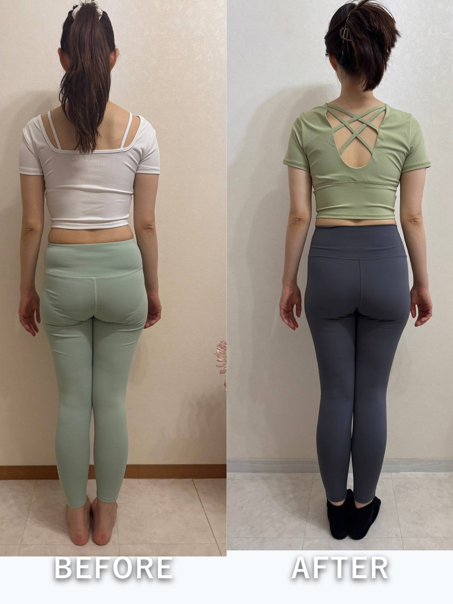

Be Grace
VOICE
受講生の変化
一生使える、
自分で整えるメソッド。
自分で整えるメソッド。
受講生のお声
2ヶ月目は早く結果が欲しくて焦っていた私に気づいたら、ゆっくりやっていこうと思った。そしたら、側湾していた背骨が真っ直ぐに！履けなくなったスカートもはけた！
ちょうど3ヶ月が経った頃、ダンスの舞台本番。たくさんの方から「今回の踊りは一味違ったね！すごく感動した」「痩せました？」「ますます綺麗になって」。実際、今まで以上に軽やかに動け、身体を庇う事なく全力で踊りきれた。踊る事がこんなに楽しい事だなんて忘れていました。嬉しさとともに湧き上がる前向きな気持ち。私は次の夢に向けてのステップを確実に進んでいます♪
私がしたことは、筋膜ローラーやストレッチをコツコツ運動に変えただけ。
ちょうど3ヶ月が経った頃、ダンスの舞台本番。たくさんの方から「今回の踊りは一味違ったね！すごく感動した」「痩せました？」「ますます綺麗になって」。実際、今まで以上に軽やかに動け、身体を庇う事なく全力で踊りきれた。踊る事がこんなに楽しい事だなんて忘れていました。嬉しさとともに湧き上がる前向きな気持ち。私は次の夢に向けてのステップを確実に進んでいます♪
私がしたことは、筋膜ローラーやストレッチをコツコツ運動に変えただけ。
— 30代・S.O様
今日もありがとうございました！
腰の運動を続けてみて、足のむくみや腰の痛みの変化を感じてます。でも今日受講して、身体の仕組みや、感情が身体に影響を及ぼすことを知り、直接聞いてみたことで、より首の運動の重要さにも気づけました。次は時間つくって首の運動やってみます。
腰の運動を続けてみて、足のむくみや腰の痛みの変化を感じてます。でも今日受講して、身体の仕組みや、感情が身体に影響を及ぼすことを知り、直接聞いてみたことで、より首の運動の重要さにも気づけました。次は時間つくって首の運動やってみます。
— 30代・N.N様
切り替え上手になってきたり、明るいパワーを持てるのも、be graceメソッドと、毎週なおさんとお話させていただく機会があるからこそです。素敵な環境に感謝いっぱいです。
— 30代・S.O様
be graceメソッドを始めて2ヶ月経ちました。今まで自分の体の中まで気を配ることはほとんどありませんでしたが、講座を聞くことによって、自分の分からない所で様々な変化が体の中で起こっていることを知り、「体ってすごい！」と改めて感じると同時に、やればやるほど成果が出ることも知りました。これからも“継続は力なり”をモットーに頑張りたいと思います。
＜3ヶ月後の変化＞
・ヒップ −2.4㎝（89.2→86.8㎝）
・お腹周り −7.2㎝（87.6→80.4㎝）
・ウエスト −2.8㎝（62.8→60㎝）
＜3ヶ月後の変化＞
・ヒップ −2.4㎝（89.2→86.8㎝）
・お腹周り −7.2㎝（87.6→80.4㎝）
・ウエスト −2.8㎝（62.8→60㎝）
— 40代・T.N様
お写真でみる変化
半年での変化

30代 M.K様
肋骨まわり −7㎝
肋骨まわり −7㎝
2ヶ月半での変化

公式LINE無料ギフトや最新情報を受け取る
→
M.M様
立ち仕事の足の痛みが 消えた
立ち仕事の足の痛みが 消えた
Be Grace
本来の自分に還る場所🤍
本来の自分に還る場所🤍